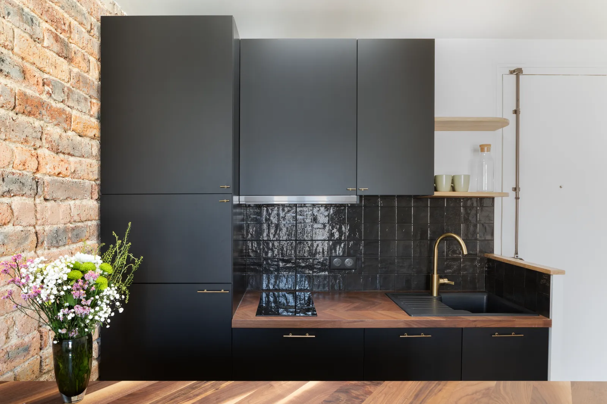
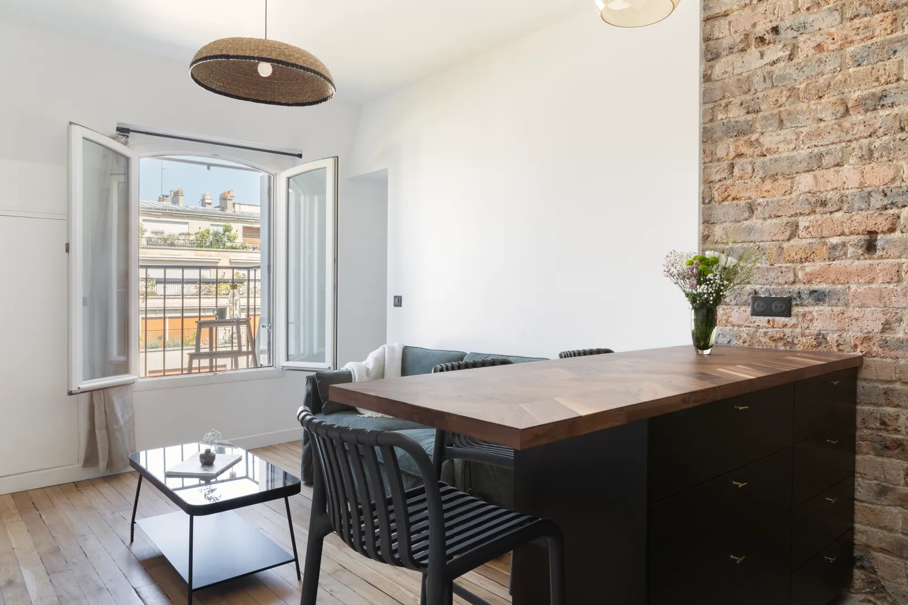
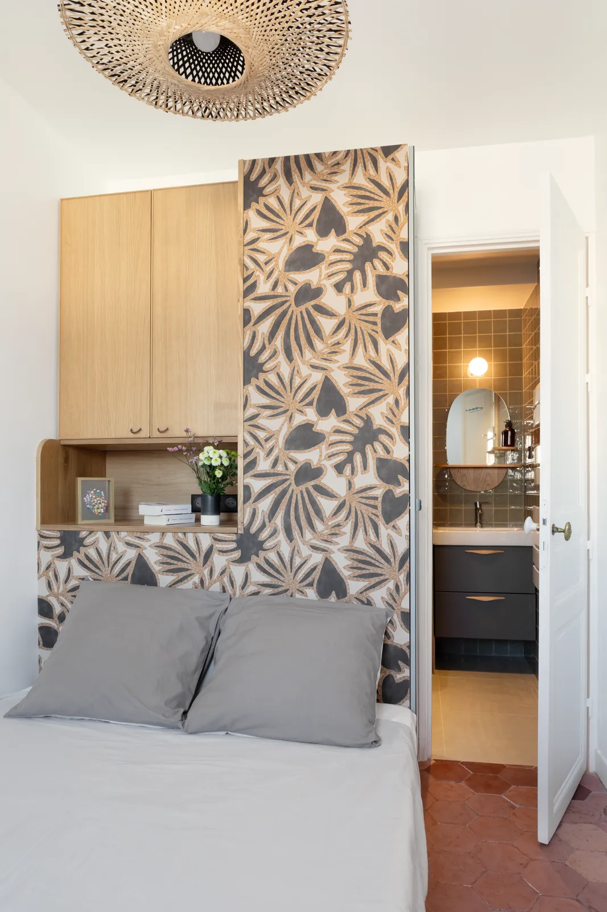
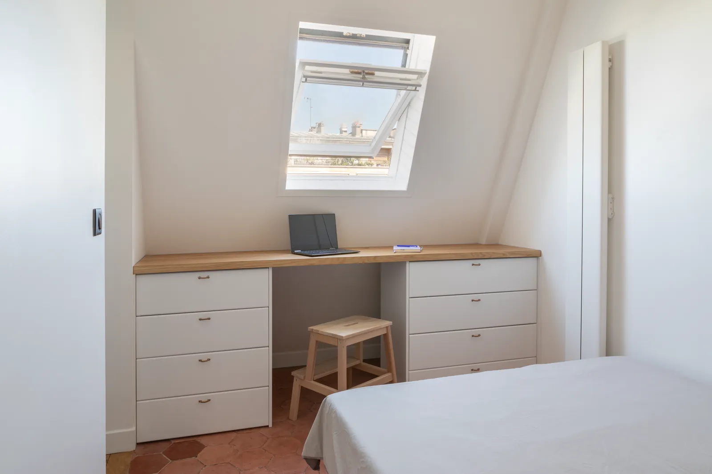
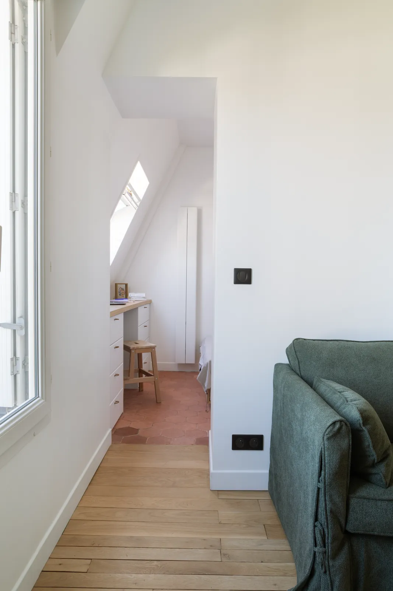
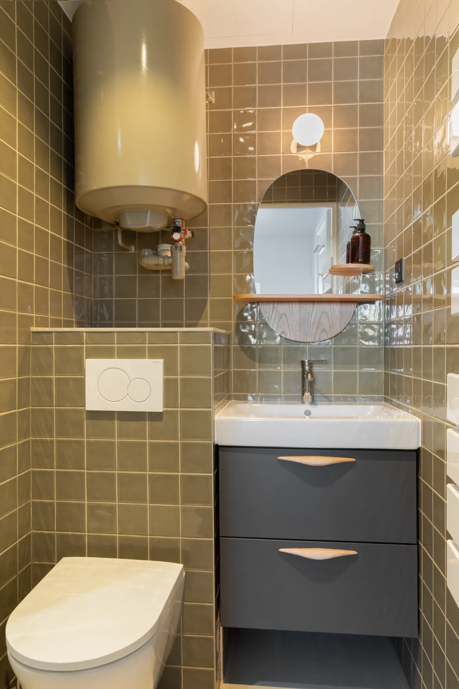
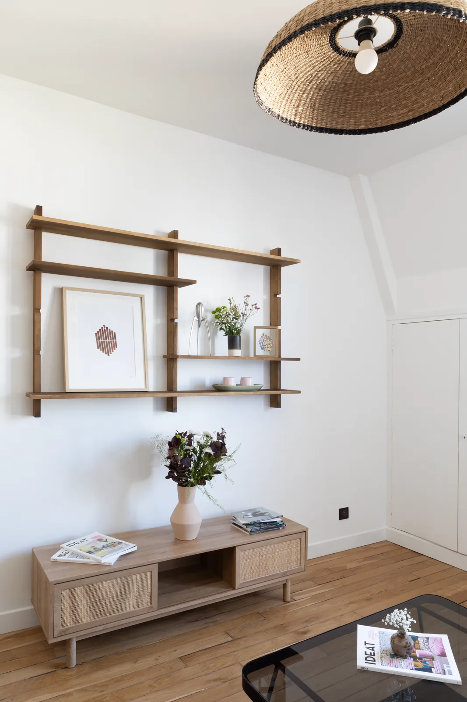

Stouls Studio / Portfolio / Studio, Saint-Germain-des-Prés
Studio, Saint-Germain-des-Prés
A small apartment under the roof, renovated entirely and laid out as a real one-room home.
- Type
- Rental investment
- Location
- Paris, Saint-Germain-des-Prés
- Surface
- About 27 m² (291 sq ft)
- Work by the studio
- Full renovation
The old terracotta floor tiles were renovated and the parquet restored. The brick wall was a discovery made during the works: it was cleaned and became the backdrop of the kitchen, a single black run with an island that serves as worktop, table and divider.
A desk and drawers were built under the slope of the roof, below the skylight. The headboard is a piece of joinery that opens from the inside and holds most of the apartment's storage, including a hanging rail. The shower room was planned to the centimetre, tiled in olive with a dark vanity.







A project like this one
If this is close to what you have in mind for Paris, tell me. A link to this page and two lines about your budget and timing are enough to start.
Previous: Studio Grands-Augustins, Paris 6thNext: Pied-à-terre, rue de l'Exposition, Paris 7th